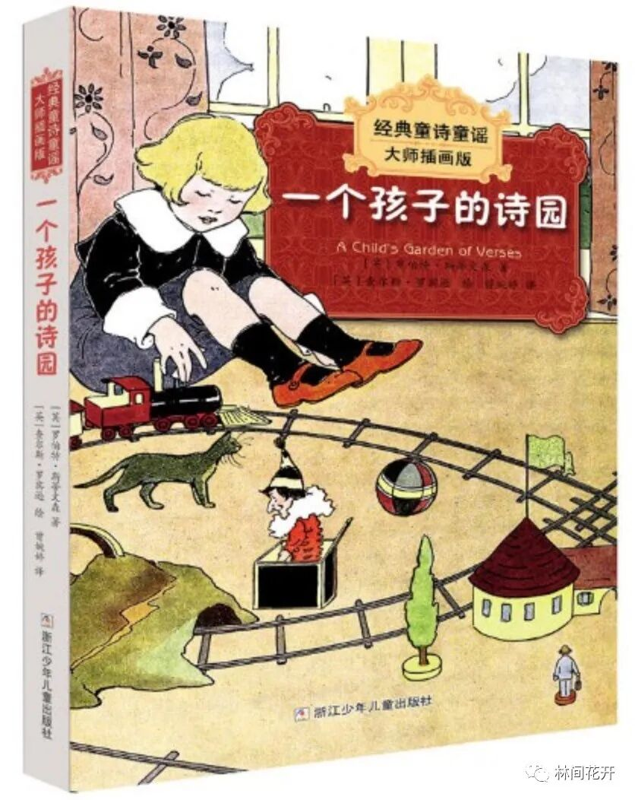

如果不是身为父母，我大概率不会去翻童诗，更不会写童诗。小孩，给了我重回童年的机会。
去年，读了一本英国作家罗伯特·路易斯·史蒂文森写的童诗集——《一个孩子的诗园》，网上有多个版本，我挑的是阳老师推荐的这一本，翻译到位，意象优美。

1
语文最好的启蒙，就是跟孩子一起读诗，写诗。童诗，也是教育小孩的最佳素材。
作者史蒂文森，生于1850年，在1894年，也就是他44岁那年病逝。他出生于英国爱丁堡，父辈是工程师，从他们那继承了敢于冒险的性格。他从小身体虚弱，长期受到肺病困扰，但这并没有阻挡他冒险的脚步，年轻时游历世界各地，为创作积累了丰富的素材。
他的代表作品包括《金银岛》、《化身博士》、《绑架》和《卡特丽娜》等。1885年，他在不断迁徙的生活中创作出了备受读者喜爱的儿童诗集《一个孩子的诗园》，从这些童诗中，感受到史蒂文森有着孩童般的快乐。
这本童诗集，一共66首，每一首短小、诙谐、富有想象力。在英国，这是一本国宝级诗集，畅销百年，几乎每个家庭必备，是不可多得的一本，儿童学习语言的最佳教材。我和我的两个孩子的童诗启蒙得益于这本书。
2
读诗时光，是快乐的时光，两个小孩从睡前听童话故事，变成听童诗。大宝坐在我的左腿上，小宝在我的右腿上歪着头，听我指读。
当读到「好孩子，坏孩子」中的一句“好孩子是纯真善良，乖巧听话，乐观向上，不挑食，玩游戏尽情玩耍”时，两人异口同声说：“我是好孩子”；读到”坏孩子是没礼貌，爱讲脏话，嘴里吃个不停“时，姐妹俩急急地摆摆手说：”我不是坏孩子“。
遇到好玩有童趣的句子，我会刻意放慢速度”不友善，爱哭娃娃，长大后会变成笨鹅呆瓜“，小宝不知道”笨鹅呆瓜“是什么意思，看我的表情，大致猜到了这不是一个好词，跟着大宝会心一笑，随即哈哈大笑。”笨鹅呆瓜“成了我们饭后的笑料，谁不听话，谁就是“笨鹅呆瓜”。
中西方，“好孩子”和“坏孩子”的定义都差不多。诗中写道：那些能守规矩，能好好吃饭，能好好睡觉的，都是“好孩子”。那些调皮捣蛋，总是要很多玩具，要很多零食，多到拿不到的，就是“坏孩子”。
小宝还要加一条：好孩子必须是聪明的。
史蒂文森揣着一颗童心，跟着他漫游在童年回忆的现实与幻想之中，平常琐碎的事，在他的想像力加持之下，变得奇幻，美妙，他眼中的世界变成了小孩的世界。
他捕捉小孩的心思和情绪，很有一套，他知道小孩都不想变成别人眼中的”坏小孩”，他写道“坏孩子”的后果，当他们成为别人的叔叔或姑妈时，一定会给侄子侄女取笑和嫌弃。
世界上的小孩都如他想的那样：纯真、童趣、快乐、善良、调皮、好奇心重，大多时候高高兴兴，乐呵呵，也有调皮捣蛋的时候，夜深了，不愿睡去，总想再多玩一会。
据说这本童诗集，是他在床上写成的，当时他身体不允许下地。怪不得书中有很多跟床相关的词汇，床单、睡觉、瞌睡、起床、晚安等。
童真的世界里，影子是橡皮球，上窜下跳；影子是个调皮鬼，时时紧跟，也是一个胆小鬼，从不敢露出真面目。一张床单能玩出好多花样，我就是巨人，在床这块海洋中，搭起城池，玩出了床单乐园；一会变成船长，跟着船儿去远航，驶向未知的世界。
3
当我向朋友推荐这本童诗集时，朋友表示：我想读呀，但不懂怎么读。
如何读童诗？正好可以分享阳老师在快写慢改五期时的总结，四点读童诗的方法：
第一点、童诗读的是童心
童诗是用儿童的视角写，也要用儿童的视角读，这是区别于小孩和成人的特点。哪些是小孩独有的？比如说小孩的过家家、把床单当乐园，爬上小床不睡。在「好玩的游戏」，一个小孩玩过家家的游戏，把椅子当材料，把楼梯当船造。一张小小的床单可以是一片乐园。
第二点、童诗读的是叙事
有剧情有故事的诗，更能让小孩记忆和理解，因为小孩的理性脑还没发育完全。
在「我的王国」诗中，讲了一个小孩当国王的故事，他是这个国度的国王，把小水池当大海，小山坡当大山脉，在里面造船只，建城池，给它们取名字，头顶飞的麻雀、池里的鱼儿都归他，他就是国王，他说了算。
第三点：童诗读的是想象力
小孩的想像力比成人丰富，生活中平常可见的东西都像是附上了魔法，积木可以是城堡；床单可以是船；自己可以一国之王；天上的天狼、北斗、猎户和所有的天神，都能装进水桶里。
在「夜晚的童话」中，睡不着的小孩，插上想象的翅膀：游行的人群、国王、皇帝浩浩荡荡出现在眼前。
第四点、童诗读的是字词
童诗还有哪些特点？读过几本童诗，发现童不泛使用象声词、拟声词、叠词等，比如，「大风之夜」中，多次使用了“嘚嘚”拟声词，也是叠词，童诗还常使用对比，重复等手段。
4
小孩是天生的诗人，生活中时不时冒出诗意的词和句子。读了《一个孩子的诗园》后，跟小孩对话时，有意识记录成诗歌，有次在临睡前读了绘本《猜猜我有多爱你》，写成一首童诗《我有多爱你》：
我的双手伸得有多开我就有多爱你我的双脚跳得有多高我就有多爱你我的笑声有多甜我就有多爱你月亮离我有多远我就有多爱你星星有多少颗我就有多爱你大海有多宽广我就有多爱你妈妈，我好爱你，晚安。
还有一次，小宝说她有一个秘密，不能告诉别人，只能告诉我。因此，有了下面这首《秘密》：
秘密
我有一个秘密
偷偷告诉你
但你不能告诉太阳
它一起床就会告诉全世界
我有一个秘密
偷偷告诉你
但你不能告诉大海
它会从上游一直流到下游
我有一个秘密
偷偷告诉你
但你不能告诉屁屁
它一放屁就会泄露秘密
读童诗，写童诗，让我学会了用小孩的视角去看她眼中的世界。
儿童的世界是怎么样的，史蒂文森写道：
我愿想象有这样的世界，
到处充满了鲜肉和琼浆
天真的孩童在饭前祈祷
共同感叹人间如此美好。